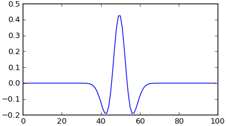

Python Skills Check
Contents
Python Skills Check#
To successfully complete the assignments in this course you should be able to do the following in Python using the Jupyter Notebooks provided. First some basics:
Distinguish between variable types (integers, floats, strings, lists, etc.).
Include conditional statements using
if,elifandelsestatements with common “comparison” operatores (like==,>=and so on).Import and use libraries, particularly the
numpyandmatplotliblibraries.Working with Arrays
Plot a function, multiple functions on the same graph, and multiple functions using subplots.
Then some more coding practices:
Define a function that takes in parameters and returns a value.
Use
forloops to iterate over a range of numbers or a list / array.Practice entering “written” answers into a markdown cell
Debug your code effectively (by printing to the screen, using comments, or using the Python debugger).
Check your skills by performing the following tasks to determine which ones you need to learn or re-learn.
Variables and if statements#
Skill 1
If you have trouble with any of these, these tutorial pages are simple for getting started, or quick reminders.
Define an integer as 5, a float as 3.4, a complex number as 100 + 3j (use “1e2” to define the 100), a string with 3-4 words, and a list with at least 5 items of any type.
Print all 5 items on one line.
Print the complex number squared.
Print only the second word of your string, with none of the adjacent spaces.
Print only the second and third items in your list (NOT the third and fourth items).
Skill 2
6. Write exactly 4 lines of code to print your intenger ONLY if it is greater than 10, OTHERWISE print the float. Test this by adjusting the value of your integer.
7. Add an extra conditional statement to check whether the float is equal to 3.4; print it if true, but print the complex if not.
Some sources for succinct instructions are:
# code for skills 1 and 2 go here.
a = 5
b = 3.4
c = 1e2 + 3j
d = "this is a string"
e = [a, b, c, d]
#print(a, b, c, d, e)
#print(c**2)
#print(d[5:7])
#print(e[1:3])
if a >= 10:
print(a)
elif b == 3.4:
print(b)
else:
print(c)
3.4
Libraries, arrays and plotting#
Skill 3: Libraries
The two key libraries we need are numpy and matplotlib. Excellent introductions and practice exercises can be found for both numpy and matplotlip at W3schools.
Write the two import lines here to import numpy as np and matplotlib as plt
# two import lines here
import numpy as np
import matplotlib.pyplot as plt
Now you are ready to make arrays using np, use them to build some time series, and plot them with plt.
Skill 4: Arrays
Arrays in Python are basically “lists” of numbers (int, real or imaginary). Accessing elements in an array, and working with arrays, is done using rules of working with lists.
Two useful functions for making an np.array are np.arange and np.linspace. Use the first if you know the spacing between each value in your array. Use the second if you know the number of points in your array.
Now, use both to make two identical arrays that goe from 0 to 1 with spacing of 0.1.
Print both versions of this list.
# a = an array made using np.arange
# b = an array made using np.linspace
a = np.arange(0, 1.1, 0.1)
b = np.linspace(0, 1, 11)
print(a)
print(b)
[0. 0.1 0.2 0.3 0.4 0.5 0.6 0.7 0.8 0.9 1. ]
[0. 0.1 0.2 0.3 0.4 0.5 0.6 0.7 0.8 0.9 1. ]
Work with arrays and lists:
If
list = ['first', 'second', 'third']carry out these steps for both array “a” (above) and list “list”.Find out which of these steps is “legal” in Python and which is not (i.e. throws an error).
Explain in one sentence why the error occurs.
Print the complete array or list
Print the first element of the array or list
Print the elements starting from 2nd till 4th
Print the elements starting from 3rd element
Demonstrate multiplication of arrays & lists by integer (i.e.
a * 2andlist * 2) and print resultDemonstrate addition in arrays & lists (i.e.
a + 2andlist + 2) and print result
# working with arrays and lists
list = ['first', 'second', 'third']
print(a) # Prints complete list
print(a[0]) # Prints first element of the list
print(a[1:4]) # Prints elements starting from 2nd till 4th
print(a[2:]) # Prints elements starting from 3rd element
print(a * 2) # math in arrays
print(a + 3) # math in arrays
print(list) # Prints complete list
print(list[0]) # Prints first element of the list
print(list[1:4]) # Prints elements starting from 2nd till 4th
print(list[2:]) # Prints elements starting from 3rd element
print(list * 2) # math in lists
#print(list + 2) # math in lists
[0. 0.1 0.2 0.3 0.4 0.5 0.6 0.7 0.8 0.9 1. ]
0.0
[0.1 0.2 0.3]
[0.2 0.3 0.4 0.5 0.6 0.7 0.8 0.9 1. ]
[0. 0.2 0.4 0.6 0.8 1. 1.2 1.4 1.6 1.8 2. ]
[3. 3.1 3.2 3.3 3.4 3.5 3.6 3.7 3.8 3.9 4. ]
['first', 'second', 'third']
first
['second', 'third']
['third']
['first', 'second', 'third', 'first', 'second', 'third']
Skill 5: Plotting and modifying plot properties#
Here are several steps for practicing use of arrays to make series, and plotting results with matplotlib. Carry out these steps one by one. Easy-to-understand references are on the W3schools matplotlib pages of their Python tutorial website.
Use arrays to make a sinusoid \(y=sin(x)\). Then plot it using plt.plot(x, y).
\(x\) is to be the x-axis, going from \(0\) to \(4 \pi\) with points at a spacing of \(0.25\)
\(y\) is to be \(sin(x)\)
Next, make a second sinusoid \(z=cos(x)\), and plot them both on the same graph.
When you have that looking right, add a legend to the plot. An example of one way to do this is here.
Change the colour of the lines to red and blue (hints here).
Use
plt.xlimandplt.ylimto zoom in and show the parts of the graph between \(x=(2,8)\) and \(y=(-0.5,1.5)\).Add a plot title “Practice Plots” and axis titles: the x-axis should say “time” and the y=axis should say “value”.
Now, let’s change the z series to be \(z=(sinx^2)\).
When point spacing is 0.25, why does this look not very “nice” or “smooth”?
Change the timeseries interval (x spacing) until the \(z\) function looks more reasonable. What value of spacing did you use to get the \(z=sin(x^2)\) series to have a smooth look with all maxima nicely flat at \(1.00\)?
# Skil 5, code for parts 1 - 9 here.
x = np.arange(0, 4*np.pi, .01)
y = np.sin(x)
#z = np.cos(x)
z = np.sin(x**2)
plt.plot(x, y, "b", label='sin')
plt.plot(x, z, "r", label='sin(x^2)')
plt.legend()
plt.title("Practice Plots")
plt.xlabel("time")
plt.ylabel("value")
#plt.xlim(2,8)
#plt.ylim(-0.5,1.5)
# "When point spacing is 0.25, hy does z=sin(x**2) look not very nice or smooth?"
# Answer this question in comments here:
Text(0, 0.5, 'value')
Subplots
In this next cell, replot these two as separate graphs side by side using plot.subplot. Nice, efficent instructions for subplots are here. No need for titles or labels, just do this as simply as possible.
Finally, explore all permutations of the 3 parameters in
plot.subplot(). Inplt.subplot(r, s, t)the integers define r = # No. rows, s = No. cols, and t = where will next plot go.
# replot the two series in separate plots side-by-side using `plt.subplot`
plt.subplot(1, 2, 1)
plt.plot(x, y)
plt.subplot(1, 2, 2)
plt.plot(x, z)
[<matplotlib.lines.Line2D at 0x2b1b70bf280>]
Optional:
Take a look at the numpy mathematical functions and use something from the list to plot a function of your choice in a new cell below. The W3schools numpy tutorial is also good.
Skill 6, Functions#
A “ricker wavelet” is a signal that looks like this:

The equation for a ricker wavelet as a function of time (t) is:
values = A(1 - t^2/w^2) exp(-t^2/w^2)
where A = 2/sqrt(3w)pi^1/4
Here,
valuesis the array or series of values as a function of t; i.e. a timeseries if you think of “t” as time.Write a function that returns an array with the wavelet, when it is called with two parameters: a time array and a width parameter “w” which will be some value between roughly 1 and 20.
Add a few lines after the function to make the time array, then call the function and plot the result. Hint: initially, use a time array “t” that goes from -50 to +50 with intervals of 1. You can play with this once the function and calling & plotting code works.
To make your plot look like the image above, use a separate time axis for the plot that goes from 0 to 100 instead of -50 to +50.
Describe the two main differences between wavelets with smaller versus larger values of ‘w’.
# Skill 6, functions (Ricker wavelets)
# based on ricker from https://docs.scipy.org/doc/scipy-0.13.0/reference/signal.html
def ricker(t, w):
B = 2/(np.sqrt(3*w)*np.pi**(1/4))
r = B*(1 - t**2/w**2)*np.exp(-t**2/(w**2))
return r
rt = np.linspace(-50, 50, 100)
time = np.linspace(0, 100, 100)
wavelet = ricker(rt, 15)
wavelet = ricker(rt, 5)
plt.plot(time,wavelet)
#Describe the to main differences between wavelets with smaller versus larger values of 'w'.
# Answer: smaller 'w' yields narrower and higher amplitude wavelets.
[<matplotlib.lines.Line2D at 0x2b1b7144a00>]
Skill 7, for loops#
Make a 4-item array containing 2, 17, 3, and 5. Write a for loop to print all items in the array. See this reference for help.
# a 4-item array containing 2, 17, 3, and 5
x = [2, 17, 3, 5]
for i in x:
print(i)
2
17
3
5
Next, use the range and len functions to achieve exactly the same result. The len will provide the length of the array, the range will use that value, and the print function will print the i’th element. (The same reference as above explains use of range in for loops.)
# use the range and len functions to achieve exactly the same result.
x = [2, 17, 3, 5]
for i in range(len(x)):
print(x[i])
2
17
3
5
Finally, practice by rewriting the following code using a for loop. Take care as several parameters are changing. And you will want to start by initializing a counter to 1 for the subplot’s 3rd parameter.
# code to be converted to for loops.
# RUN THIS CELL, BUT DO NOT CHANGE IT'S CODE.
# imports needed if not already done above.
# import numpy as np
# import matplotlib.pyplot as plt
x = np.linspace(0, 1000, 1000)
y = (x**3)*np.sin(x)
plt.subplot(1, 4, 1)
plt.plot(x, y)
x = np.linspace(0, 100, 1000)
y = (x**3)*np.sin(x)
plt.subplot(1, 4, 2)
plt.plot(x, y)
x = np.linspace(0, 10, 1000)
y = (x**3)*np.sin(x)
plt.subplot(1, 4, 3)
plt.plot(x, y)
x = np.linspace(0, 1, 1000)
y = (x**3)*np.sin(x)
plt.subplot(1, 4, 4)
plt.plot(x, y)
[<matplotlib.lines.Line2D at 0x1f623eafa60>]
Your solution in the next cell:
# your solution
counter = 1
for i in [1000, 100, 10, 1]:
x = np.linspace(0, i, 1000)
y = (x**3)*np.sin(x)
plt.subplot(1, 4, counter)
plt.plot(x, y)
counter += 1
Skill 8: Finally - let’s briefly practice entering written answers into a Jupyter Notebook cell, using Markdown.#
In the next cell, write some notes that include:
A main heading and two subheadings
Two very short pargraphs, including some words that are bold, some that are italics and some that are “code”.
A short separate section of using code formatting. This could be a short piece coiped from work above.
A numbered list and a bullet list of at least 3 items each.
Be as brief as you like, but include each component. You can get hints from markdown cells above by double clicking those cells, seeing how they are written. As for code cells, the “shift-enter” key combination renders the markdown cell and takes you out of edit mode.
Skill 9: Debugging#
You should be able to effectively debug your code. A simple method of debugging is printing out variables at various points in your code and checking if those values match what you expect. You can also try commenting out parts of your code to see how this affects your results. Those methods are probably good enough for this course, but you can also look into using the Python debugger if you want. (Using %debug)
Suggested resources & tutorials#
https://earth-env-data-science.github.io/intro: a Jupyter book for a beginner’s course about Jupyter, Python, Git and data science. Creative commons license. Python intro starting at ch. 7 is succinct.
https://www.w3schools.com/python/default.asp: Nice because it’s very granular. Also has “try it out” buttons to test how things work in a live window. Really helpful!
Same place has a pandas tutorial (https://www.w3schools.com/python/pandas), and others for numpy, scipy and matplotlib.
https://phaustin.github.io/pyman/ Probably more than needed - it’s pretty comprehensive.
This is a tutorial on plotting with
matplotlib.Here is the matplotlib documentation where you can find plotting functions.
This is the numpy documentation which contains math functions like
np.sin,np.cos, andnp.exp.Here is an introduction to imaginary numbers in Python
Challenge component#
This is optional for those who feel confident.
Putting it all together#
Here is a task that incorporates:
integers, floats, strings, and arrays.
ifstatements andforloops.libraries
numpyandmatplotlib.plots with labels.
a function.
Use the ricker function you created above.
Make 4 wavelets with 4 different widths (eg, 5, 10, 15, 20).
Plot these four wavelents on the same graph including labels for a legend saying “w=5”, “w=10”, etc.
Then plot them as four little plts in a 2 x 2 set of subplots (no labels).
# Optional challenge component, sections 1, 2 and 3.
# use the ricker function generated above
npoints = 100
ricker_t = np.linspace(-npoints/2, npoints/2, npoints)
signal1 = ricker(ricker_t, 5)
signal2 = ricker(ricker_t, 10)
signal3 = ricker(ricker_t, 15)
signal4 = ricker(ricker_t, 20)
plt.plot(ricker_t, signal1, label="w=5")
plt.plot(ricker_t, signal2, label="w=10")
plt.plot(ricker_t, signal3, label="w=15")
plt.plot(ricker_t, signal4, label="w=20")
plt.legend()
<matplotlib.legend.Legend at 0x2b1b9fad040>
# Plot this as four little plts in a 2 x 2 set of subplots (no labels).
plt.subplot(2, 2, 1)
plt.plot(ricker_t, signal1)
plt.title("w = 5")
plt.subplot(2, 2, 2)
plt.plot(ricker_t, signal2)
plt.subplot(2, 2, 3)
plt.plot(ricker_t, signal3)
plt.subplot(2, 2, 4)
plt.plot(ricker_t, signal4)
[<matplotlib.lines.Line2D at 0x2b1ba233130>]
Continue the challenge task …#
Use a for loop and if statements to find the max value of each wavelet, then print these 4 values.
Make a 500-points long timeseries of zeros (use np.zeros), then add these 4 wavelets to it one after another so the final timeseries with all 4 wavelets can be plotted.
Add x and y axis labels.
Try making a “formated” title that looks like
When w = 5, 10, 15, 20, peaks are 0.33, 0.22, 0.11, 0.05. Use string formatting to make a string with the text which incorporates max values you found. then use the completed string for the plot title.
# Challenge task items 4 - 7.
time = np.arange(0, 500, 1)
sum = np.zeros(500)
max1 = 0
max2 = 0
max3 = 0
max4 = 0
for i in range(99):
if signal1[i] > max1:
max1 = signal1[i]
if signal2[i] > max2:
max2 = signal2[i]
if signal3[i] > max3:
max3 = signal3[i]
if signal4[i] > max4:
max4 = signal4[i]
#print(max1, max2, max3, max4)
sum[0:npoints] += signal1
sum[npoints:2*npoints] += signal2
sum[2*npoints:3*npoints] += signal3
sum[3*npoints:4*npoints] += signal4
plt.plot(time,sum)
plt.xlabel("Time")
plt.ylabel("Value")
title = "When w = 5, 10, 15, 20, peaks are {:.2f}, {:.2f}, {:.2f}, {:.2f}."
plt.title(title.format(max1, max2, max3, max4))
Text(0.5, 1.0, 'When w = 5, 10, 15, 20, peaks are 0.38, 0.27, 0.22, 0.19.')
# Practice writing markdown
# Convert this cell to markdown, remove these two lines, and follow instructions above.